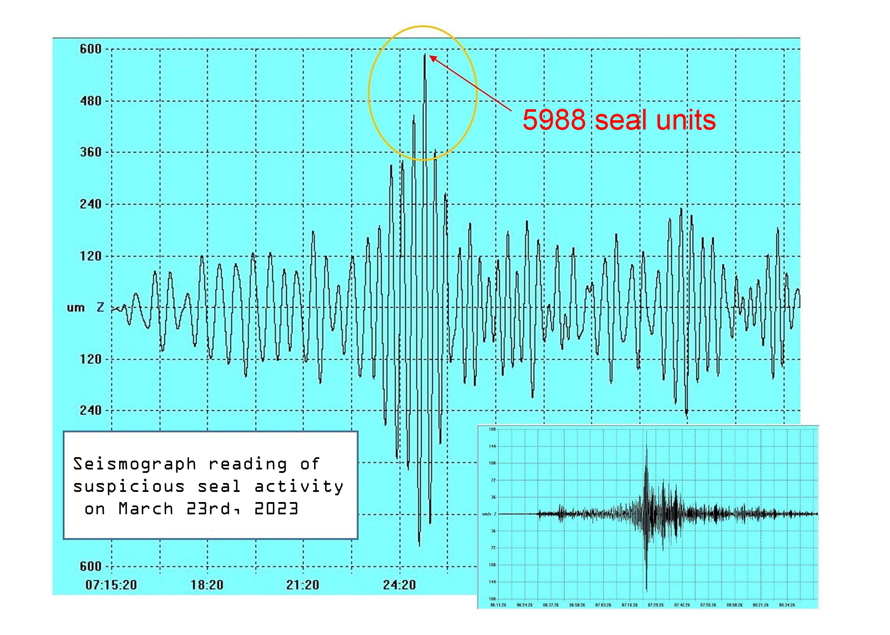

The seal located at Marsh Plaza on Boston University campus is an ostensible memorial to the school's values and history. However,
a darker, more sinister secret might be "sealed" away by this inconspicious monument that thousands of students pass by everyday. Recent
findings point towards something greater being at play here, which you can read below.
Who's to tell you where you CAN and CANNOT stand and or walk??? Start asking questions, we'll start finding answers.

SEISMOGRAPH READING! THE SEAL IS VIBRATING!?
Students from the Seismology Society provided this reading of the seal acting suspicious and strange.
Readings show the seal was present at the time of recording and acting almost uncannily "seal-like". HARD EVIDENCE DOESN'T LIE.
ARTIST'S RENDITION OF THEIR SEAL-RELATED VISION!!!
Talented but cash-strapped CFA students helped render this recreation of an Allston resident's drunken
vision of the Marsh Plaza seal being lifted by itself and revealing a powerful beam of light...Drunk daydream or apocolyptic vision???
TESTIMONIAL FROM SOMEONE WHO CLAIMS THE SEAL HAUNTED THEM
In an interview with a recent BU dropout who wished to remain anonymous, the bleak consequences of
anyone who dares to make contact with the seal were revealed. This student accidentally made contact with the seal
while evading a tour group on her way to class. Her dreams were soon haunted by visions of a Boston Terrier pissing on her dorm room carpet, and the subsequent
guilt caused a mental breakdown and a leave of absence from the university...A guilty conscious or something far more sinister???